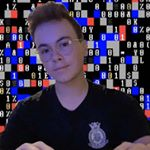
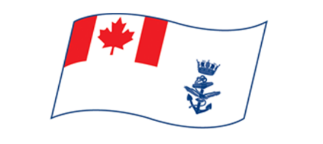

AudioID During the COVID-19 pandemic, implemented a voice recognition system that utilizes secure numeric keys to authenticate users. AudioID is an open-source, Internet-free application that allows users to access controlled areas traditionally requiring a physical device (i.e. RFID card), without contact.
Airntell Interface Airntell Companion GUI (team): Made an user friendly interface for the successful deployment of Airntell aerial systems using Python, JavaScript and C++.
Blinking Light Decoder Using Arduino and C++, created a device that decodes blinking lights from naval vessels into English or Morse Code.
ROSIE Control & Propulsion Created and implemented software to control an underwater robotic system with Arduino and C++,mentored other students inthe proper usage of the IDE along with C++ concepts
Minus Desktop Helper Made a desktop command-line interface for easy access to applications to aid persons with disablilities, contains an easy interface made with Python and MS-DOS. Installed on devices in my school.
Welcome to my portfolio site! Here, you will find my latest projects, and a little bit about me. Please feel free to look around and do not hesistate to contact me if you have any questions! A video of ROSIE in actionBorn in Ontario, Colby grew up fascinated with computers and technology, He vividly remembers being inspired by his father's love for electronics, which stemmed his interest in computer science. When Colby was five, his family bought their first desktop computer resulting in his explosion into the realm of computing. At the age of seven, Colby said goodbye to his Ontario friends and moved away to Newfoundland & Labrador, where he would continue to pursue his passion in various robotics teams along with competitions. Colby has earned several awards for his hard work as well as leadership in STEAM related fields.
This combined with his highly-regarded positions inside the Sea Cadet program molded him into an innovative leader at the Canadian Robotics league as well as Airntell Aerospace, a startup company that deploys autonomous UAV systems for SAR operations. On top of this, her is also a Boatswain in the Royal Canadian Naval Reserve. A position in which he excelled in thanks to the Cadet program.
Colby is a dedicated individual who will use his leadership to see any task through, no matter the scale. His work along with mentorship has proven this countless times,, making him an effective member of any team or organization.
President @Canadian Robotics LeagueColby Pryor